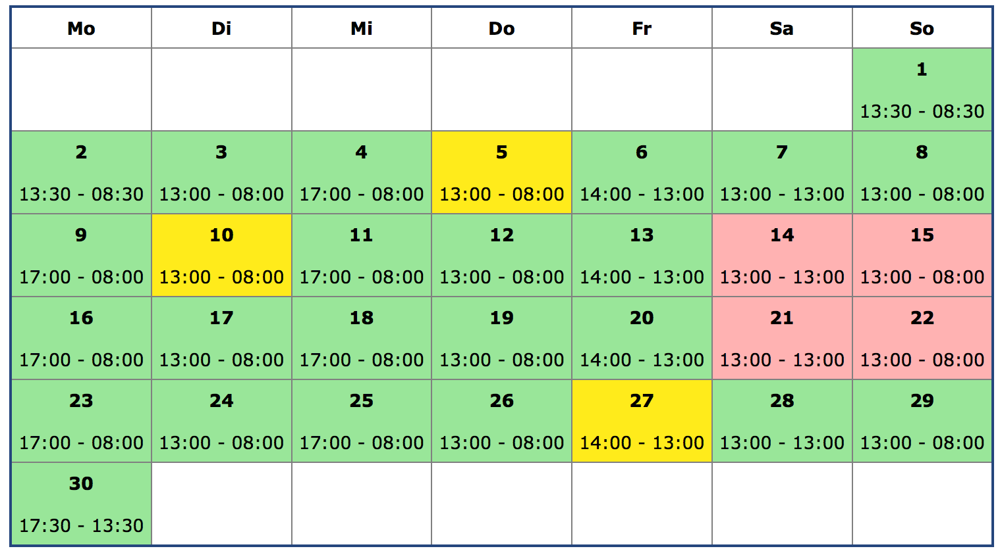

24.04.2014
- Öffentliche Notizen werden im Kalender als Tabelle angezeigt
- Öffentliche und private Notizen werden im Dienstplan angezeigt
- Git-Repository bei GitHub angelegt und eingecheckt

23.04.2014
- Nachbereitung Input Patrick
- Stundenübersicht der Assistenten
- Monats-Plan-Tabelle als genauere Möglichkeit für Patrick die Dienste zu planen
- Speichern und Laden der Monats-Plan-Tabelle mit AJAX
- Dienst-Zeiten werden auch im Kalender angezeigt
- Speichern des Kalenders überarbeitet - jetzt auch mit AJAX, keine versteckten Input-Element mehr
- Master-Mode aus Kalender rausgeschmissen, da nicht mehr benötigt



22.04.2014
- AJAX Test mit POST-Parametern - Vorbereitung für Speichern des Dienstplans auf dem Server
- Roster kann gespeichert werden - mit Hilfe von AJAX
- Roster kann geladen werden
- Besuch bei Patrick - gemeinsame manuelle Dienstplanerstellung für den Mai mit Hilfe meiner Software - hat anstatt 4-5 Stunden nur eine knappe Stunde gedauert (inklusive Erklärungen und Übertragen in Excel)
- Feedback von Patrick war sehr positiv - schon jetzt stellt die Software eine Erleichterung für ihn da
- In der Dienstplan-Tabelle werden die Überschriften wochenweise wiederholt für bessere Lesbarkeit

21.04.2014
- Roster kann die Parameter Jahr und Monat übergeben werden
- Refactoring von doppeltem Code - DRY Don't repeat yourself
- Problem: += bei Strings gibt es in PHP nicht - das Pendant ist .=
- JavaScript Funktion die client-seitig den Dienstplan überprüft, dass es genau EIN Dienst und genaue EINE Bereitschaft gibt
- Skype mit Freddy
19.04.2014
- Darstellung der möglichen Termine als Tabelle
- Manuelle Dienstplanerstellung (per Klick) möglich

18.04.2014
- Einarbeitung PHP-Forms mit W3Schools
- Erstellung PHP Form mit Eingabe des Namens, Verstecktes Feld mit möglichen Daten (was mit JavaScript befüllt wird)
- Speichern der eingegebenen Daten als Text-File auf dem Server
- Problem: Text-File wird nicht auf Server gespeichert (beim lokalen Test funktioniert es) - Lösung: Rechte auf Server mussten angepasst werden - chmod 777 UserInput
- Calendar.php von außen parametrierbar gemacht mittels GET - z. B. calendar.php?year=2014&month=4
- index.php -> automatische Weiterleitung auf calendar.php mit nächstem Monat
- Möglichkeit für Patrick freie Tage zu markieren -> master-Mode
- Freie Tage werden den Assistenen angezeigt
- Versuch Mailversand leider gescheitert

17.04.2014
- Einarbeitung PHP mit W3Schools
- Implementierung HTML-Kalender mit gut/schlecht Terminen in PHP
- Hochladen des Kalenders auf den Server
- Test auf iPhone, iPad und Desktop

16.04.2014
- PhpStorm runtergeladen und installiert
- PHP Version in PhpStorm eingerichtet
- Chrome + Extension installiert, damit ich mit PhpStorm debuggen kann
15.04.2014
- Anmeldung Masterarbeit
- Experiment HTML-Kalender mit gut/schlecht Terminen
- Erstes Skype-Gespräch mit Freddy

14.04.2014
- Gespräch mit Patrick Sieben bei ihm zu Hause
Vorarbeiten ohne Datum
- Server organisiert
- Server eingerichtet (Apache, PHP, Samba-Share)
- Titel überlegt
- Recherche Sturzerkennung
- 2 Besprechungen mit Prof. Mahr